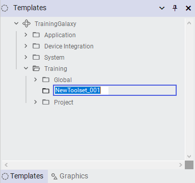
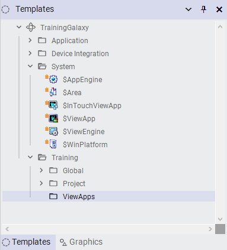
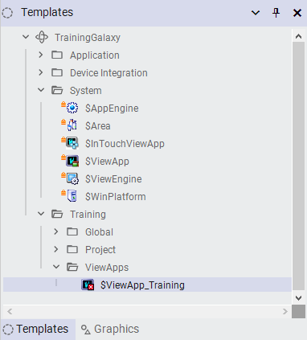
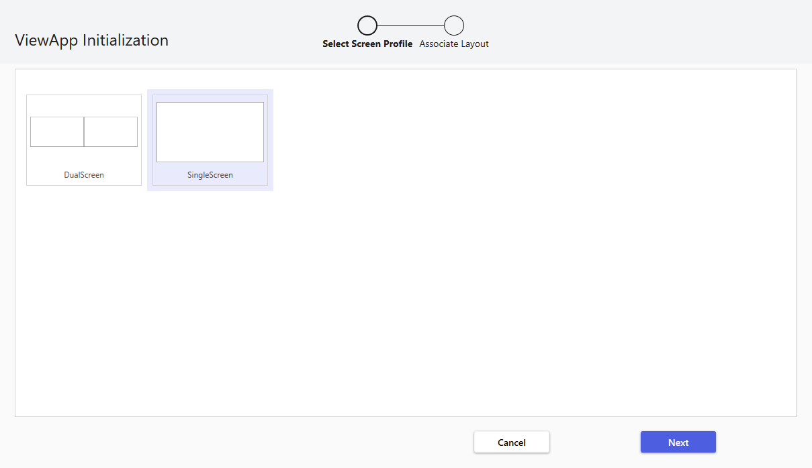
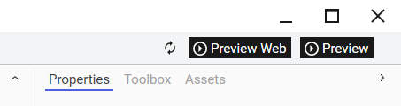
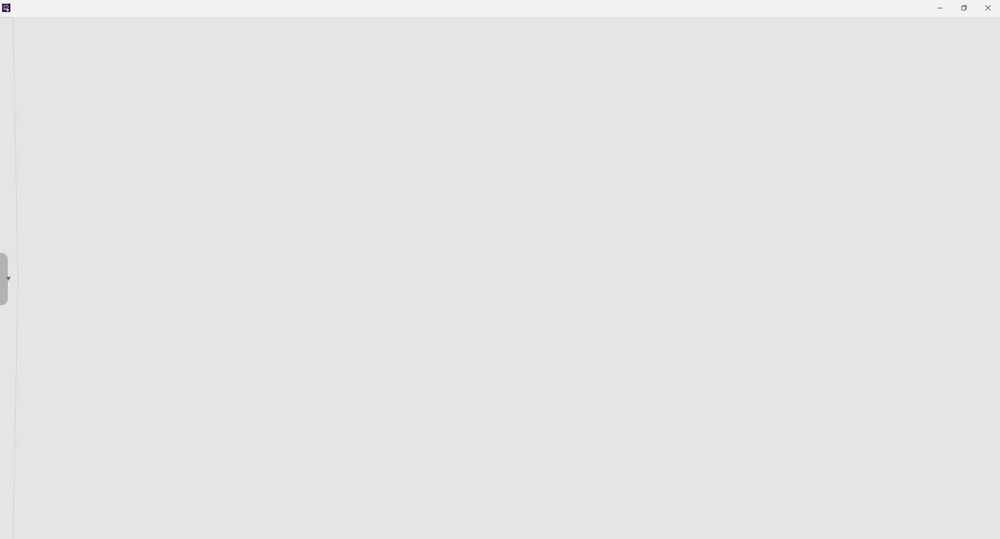
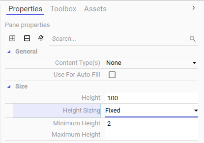

Page 108
Module 2 — Getting Started | Pages 107-138
Lab 3 – Creating and Running a ViewApp
AVEVA™ Operations Management Interface 2023
Lab 3 – Creating and Running a ViewApp
Introduction
In this lab, you will perform steps necessary to create a ViewApp. You will:
Derive a template from the base $ViewApp template
Initialize the derived template with the screen profile and layout you created in the
previous lab
Review the derived template in the ViewApp Editor and configure it
Test the ViewApp with a preview session from the ViewApp Editor
Edit and save the configuration
You will create an instance from the derived ViewApp template and deploy the instance to runtime
on the production node. Once the instance is deployed, you will switch to the production node and
launch the ViewApp to see its behavior in runtime.
Then you will switch back to the engineering node, make changes to the Main layout, and redeploy
the ViewApp. On the production node, you will view the changes in runtime by opening the
updated ViewApp.
Objectives
Upon completion of this lab, you will be able to:
Create a ViewApp template for building an Operations Management Interface application
Initialize a ViewApp application with a screen profile and layout
Use preview mode from the ViewApp Editor
Use the navigation Apps to review and navigate the default navigation items
Use the TitleBarApp at runtime
Create a ViewApp instance
Deploy a ViewApp instance to the runtime environment
Launch a ViewApp application in the runtime environment
Deploy changes to a running ViewApp
Module 2 – Getting Started
AVEVA™ Training
Create a ViewApp
In the following steps, you will create a new template toolset on the Templates tab for organizing
ViewApps created in this course. Then, you will create a derived ViewApp template, initialize it with
a screen profile and the layout you created in the previous lab, and open it in the ViewApp Editor.
1.
On the Templates tab, expand TrainingGalaxy.
2.
Right-click the Training toolset and select New Template Toolset.
A new toolset with the default name is created under the Training toolset.

Lab 3 – Creating and Running a ViewApp
AVEVA™ Operations Management Interface 2023
3.
Rename the new toolset to ViewApps.
4.
On the Templates tab, expand the TrainingGalaxy \ System toolset.


Module 2 – Getting Started
AVEVA™ Training
5.
Right-click the $ViewApp object and select New | Derived Template.

Lab 3 – Creating and Running a ViewApp
AVEVA™ Operations Management Interface 2023
A derived template is created with the default name in the System toolset.
6.
Rename the derived template to $ViewApp_Training and move it to the Training \ ViewApps
toolset.
Notice the error icon for $ViewApp_Training. The icon indicates that the ViewApp template
has not yet been configured.


Module 2 – Getting Started
AVEVA™ Training
7.
Double-click $ViewApp_Training to open it in the ViewApp Editor.
The ViewApp Initialization dialog box appears.
The first step of ViewApp initialization is Select Screen Profile. This allows you to select the
screen profile that will be used by the ViewApp. Notice that both the DualScreen and
SingleScreen screen profiles you created in the previous lab are listed and the first one in the
list is selected.
8.
Select the SingleScreen screen profile and click Next.


Lab 3 – Creating and Running a ViewApp
AVEVA™ Operations Management Interface 2023
The next step, Associate Layout, appears.
Notice that the Main layout you created in the previous lab is listed and already selected for
the Primary screen in the profile. A preview of the screen with the layout appears on the left.
9.
Click Finish.
The ViewApp Editor opens.
You may want to maximize the editor to get a better view.


Module 2 – Getting Started
AVEVA™ Training
Notice that the selections you made during ViewApp Initialization are reflected in the preview
area. The SingleScreen screen profile is selected and the Main layout is displayed. The Main
layout shows the content you assigned to Pane2 and Pane3 in the previous lab.
Open a Preview Session and Test Navigation
In the next steps, you will open a ViewApp preview session from the ViewApp Editor and use the
session to test the ViewApp navigation.
10. In the top-right corner of the ViewApp Editor, click Preview.


Lab 3 – Creating and Running a ViewApp
AVEVA™ Operations Management Interface 2023
A message appears indicating that preview mode is for testing only, and not intended for
production use.
11. Review the message, and then check Do not show this message again.
12. Click OK to close the message.
A ViewApp preview session opens and an icon is available in the task bar.
This may take a few moments.


Module 2 – Getting Started
AVEVA™ Training
13. From the task bar, select the preview session to open it.
Notice that when the ViewApp preview session opens, Pane2 at the top takes up the entire
display area and Pane1 does not show. This is because:
Panes configured for AutoFill are set to Hide When Empty by default, and there is no
content to fill Pane1 automatically based on the current navigation.
Pane2 is configured with its Height Sizing set to Variable by default.
14. Click the Display Slide-In Pane button on the left side of the layout to view Pane3, which
contains the NavTreeControl.


Lab 3 – Creating and Running a ViewApp
AVEVA™ Operations Management Interface 2023
The slide-in pane opens.
Notice that there is a Search entry field at the top of the navigation tree.
15. In the Search entry field, enter a search string, such as mix, to quickly find navigation items
that match the search string.
This example shows navigation items that match the search string mix.


Module 2 – Getting Started
AVEVA™ Training
16. Select a navigation item from the results list.
This example shows Mixer100 selected in the results list.

Lab 3 – Creating and Running a ViewApp
AVEVA™ Operations Management Interface 2023
17. Click off the slide-in pane or press the ESC key to close the slide-in pane.
This example shows the NavBreadcrumbControl navigated to Mixer100.
18. At the top-right of the preview, click Minimize to minimize the preview session.


Module 2 – Getting Started
AVEVA™ Training
Edit Layout from the ViewApp Editor
In the following steps, you will open the Main layout for editing in the Layout Editor from within the
ViewApp Editor. After saving changes made to the Main layout, you will see your changes in the
ViewApp preview session.
19. In the ViewApp Editor, click the vertical ellipsis on the right side of the Layout field, which
shows the assigned layout is Main.
20. From the drop-down list, select Edit Layout.
The Main layout opens in the Layout Editor.


Lab 3 – Creating and Running a ViewApp
AVEVA™ Operations Management Interface 2023
21. In the preview area for the layout, ensure Pane2 is selected.
22. Right-click Pane2 and select Pane Properties.
23. On the Properties tab, change the Size \ Height Sizing property to Fixed.
24. Save and close the Main layout, and check it in.


Module 2 – Getting Started
AVEVA™ Training
25. Switch to the ViewApp preview session.
Notice that the configuration changes made in the Layout Editor are reflected in preview.
Pane2 with the NavBreadcrumbControl at the top no longer takes up the whole screen, but
Pane1 set for AutoFill is still hidden.This is because:
Panes configured for AutoFill are set to Hide When Empty by default, and there is still no
content to fill Pane1 automatically based on the current navigation.
Pane2 is now configured with its Height Sizing property set to Fixed.
The following example shows the view when navigated to Mixer100.
26. In the top-right of the preview, click Close to close the preview session.

(expanded: Mixer100-400)
• Line2, Packaging, Plant, ProdPLC1
• Right-Click Context Menu on $ViewApp_Training:
• Open (Ctrl+O), Open Read-Only
• Check Out, Check In (greyed), Undo Check Out (greyed)
• Override Check Out (greyed), Validate
• New submenu:
• Instance (Ctrl+N) (highlighted/selected)
• Derived Template (Ctrl+Shift+N)
• Delete (Del), Rename (F2)
• Assign To..., Unassign (greyed)
• Import/Export (submenu arrows)
• Object Help... (Ctrl+F1)
• Synchronize Views (Ctrl+Shift+Z)
• Properties... (Alt+Enter)
• Application Information (Ctrl+I)]
Lab 3 – Creating and Running a ViewApp
AVEVA™ Operations Management Interface 2023
27. Close the ViewApp Editor and check in the $ViewApp_Training template.
Create a ViewApp Instance
Now you will create a ViewApp instance from the derived ViewApp template.
28. On the Templates tab, in the Training \ ViewApps toolset, right-click $ViewApp_Training
and select New | Instance.


(expanded):
• Mixer100, Mixer200, Mixer300, Mixer400 (blue sphere icons)
• Line2 [Line2]
• Packaging [Packaging]
• Plant
• Bottom Tabs: Model - Tagname, Deployment (selected), Derivation]
Module 2 – Getting Started
AVEVA™ Training
In the Deployment view, notice that the new instance with the default name of
ViewApp_Training_001 is created in UnAssigned Host.
Leave the default name for the instance.

Lab 3 – Creating and Running a ViewApp
AVEVA™ Operations Management Interface 2023
Create a ViewEngine to Host the ViewApp Instance
To deploy the ViewApp instance to the runtime environment, the instance must be hosted by a
ViewEngine. In the following steps, you will create a ViewEngine instance and assign the ViewApp
instance to it.
29. On the Templates tab, in the System toolset, right-click the $ViewEngine template and
select New | Derived Template.
30. Rename the derived template to $gViewEngine and move it to the Training \ Global toolset.

(expanded): Mixer100-400
• Line2, Packaging, Plant, ProdPLC1
• Production, Receiving, Shipping, Sys
• Bottom Tabs: Model - Tagname, Deployment (selected), Derivation]
Module 2 – Getting Started
AVEVA™ Training
31. Create a new instance from $gViewEngine and rename the instance to ViewEngine1.

(expanded): Mixer100-400
• Line2, Packaging, Plant, ProdPLC1
• Production, Receiving, Shipping, Sys
• ViewEngine1 (red circle highlight)
• ViewApp_Training_001 (red circle highlight)
• Bottom Tabs: Model - Tagname, Deployment (selected), Derivation]
Lab 3 – Creating and Running a ViewApp
AVEVA™ Operations Management Interface 2023
32. In the Deployment view, assign ViewEngine1 to PROD_Platform1.
For the purposes of this lab, PROD_Platform1 will be used as the production
visualization client node.
33. Assign ViewApp_Training_001 to ViewEngine1.

• Production [Production]
• Receiving [Receiving]
• Shipping [Shipping]
• Sys [Sys] (expanded, red box highlight):
• AppEngine1
• GRPlatform
• PROD_Platform1
• ProdPLC1
• ViewApp_Training_001 (blue selection bar)
• ViewEngine1
• Bottom Tabs: Model - Tagname (active), Deployment, Derivation]
Module 2 – Getting Started
AVEVA™ Training
34. In the Model view, assign ViewEngine1 and ViewApp_Training_001 to the Sys area.

Lab 3 – Creating and Running a ViewApp
AVEVA™ Operations Management Interface 2023
Deploy the ViewApp
Now you will deploy the ViewEngine and ViewApp instances to the runtime environment.
35. In the Deployment view, right-click ViewEngine1 and select Deploy.
36. Leave the default deployment options and click Deploy.
ViewEngine1 and ViewApp_Training_001 are deployed.
Notice that at first, the icon for the ViewApp instance is an orange synchronization icon. The
orange icon indicates that the ViewApp files are in the process of being transferred to the
target node. Once the file transfer is complete, the icon changes to the ViewApp icon.
37. In the Deploy dialog box, click Close when the deployment completes.

Module 2 – Getting Started
AVEVA™ Training
Launch the ViewApp in Runtime
Now, you will launch the ViewApp in runtime. Recall that the ViewApp was deployed to the
production node, so you will switch to that node to launch the ViewApp.
38. Switch to the production node.
Your instructor will provide instructions for switching to the production node.
39. On the production node, open the AVEVA OMI Application Manager.
A shortcut to the AVEVA OMI Application Manager is located on the desktop of the
production node. You can also find it in the list of applications on the node.
VIEWAPP_TRAINING_001 appears in the list of ViewApps deployed to the node.
40. Click LAUNCH to launch VIEWAPP_TRAINING_001.
The ViewApp opens maximized to the full screen by default.
This may take a few moments.
You may need to manually minimize the AVEVA OMI Application Manager.

Lab 3 – Creating and Running a ViewApp
AVEVA™ Operations Management Interface 2023
Once the ViewApp opens, you can use the NavBreadcrumbControl at the top or the
NavTreeControl in the left slide-in pane to navigate through the ViewApp.
The following example shows the ViewApp navigated to Mixer100.
41. Leave the ViewApp running on the production node.
42. Switch back to the engineering node.
Edit the Main Layout and Deploy the Changes
In the following steps, you will open the Main layout in the Layout Editor on the engineering node.
You will add a pane to the top of the layout, configure the size of the pane, and add the
TitleBarControl to it. Then you will deploy the changes to the ViewApp running on the production
node.
43. Ensure you are working on the engineering node.
44. On the Graphics tab, in the Training \ Layouts toolset, double-click Main to open it in the
Layout Editor.
45. In the layout preview area, select Pane2.

Module 2 – Getting Started
AVEVA™ Training
46. With Pane2 selected, right-click the pane and select Add Pane | Above.
A new pane named Pane4 is added above Pane2.


Lab 3 – Creating and Running a ViewApp
AVEVA™ Operations Management Interface 2023
47. Select Pane4, and on the Properties tab, notice that the Size \ Height Sizing property of
Pane4 is Fixed.
This is because Pane4 was created based on the properties of Pane2, and the Size \ Height
Sizing property for Pane2 is Fixed.
48. Modify the Size \ Height property for Pane4 to 80.


add/drop indicator in top-right of Pane4]
Module 2 – Getting Started
AVEVA™ Training
49. On the Toolbox tab, enter a search string to find the TitleBarControl and select it.
50. Drag the TitleBarControl to Pane4.


Lab 3 – Creating and Running a ViewApp
AVEVA™ Operations Management Interface 2023
51. With Pane4 selected, on the Properties tab, change the Content and Display Area \ Title
property to AVEVA OMI Training Application.
52. In the Layout Editor, click outside of the panes to select the layout and display layout
properties on the Properties tab.


Module 2 – Getting Started
AVEVA™ Training
53. On the Properties tab, uncheck the Behavior \ Has Title Bar property.
54. Save and close the Main layout, and check it in.
55. In the Deployment view, right-click ViewApp_Training_001 and select Deploy.
56. Leave the default deployment options and click Deploy.
57. Click Close when the deployment process completes.
58. Switch to the production node.
An Open Updated ViewApp message appears.


Lab 3 – Creating and Running a ViewApp
AVEVA™ Operations Management Interface 2023
59. Click OPEN NOW.
The updated ViewApp opens.
Notice that its appearance is different.
Instead of the default title bar, the TitleBarControl displays at the top and the title that you
configured is shown.
You can leave the ViewApp running on the production node.
60. Switch back to the engineering node.

Module 2 – Getting Started
AVEVA™ Training
Review above.